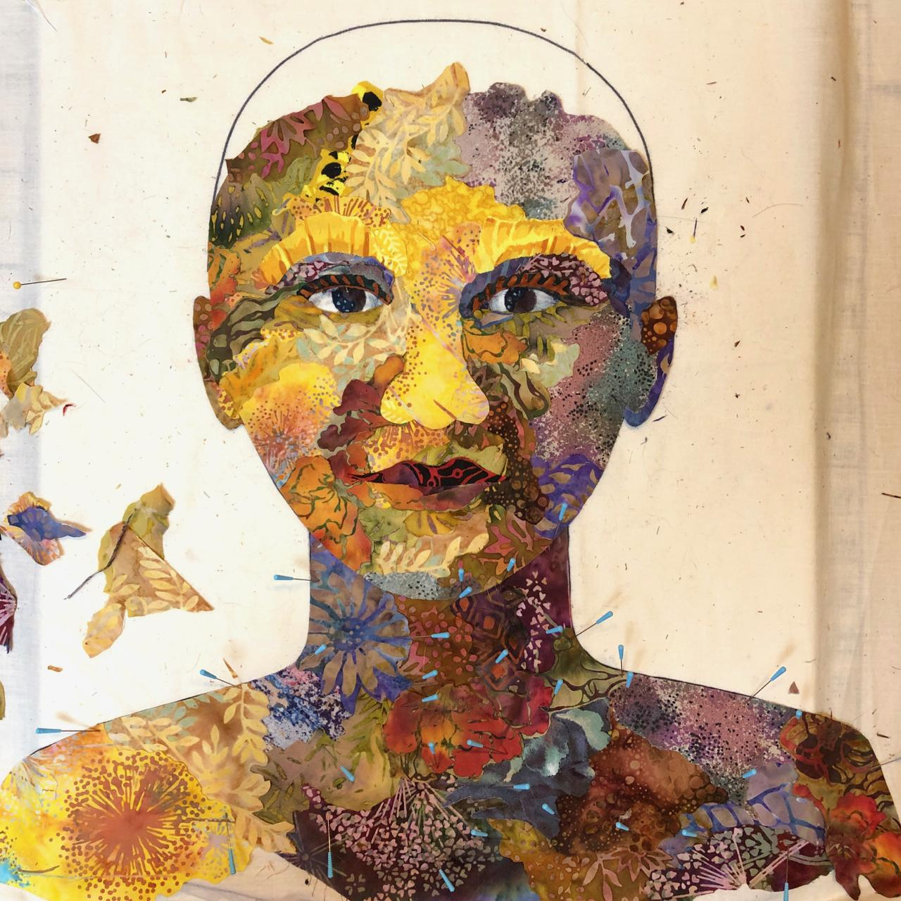
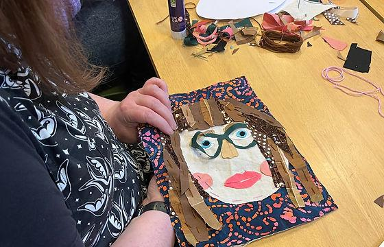
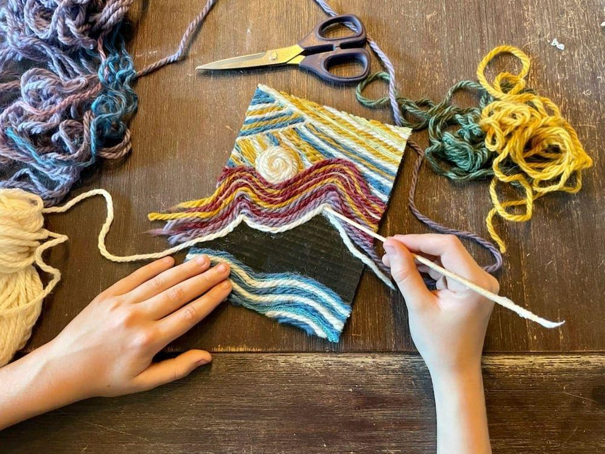
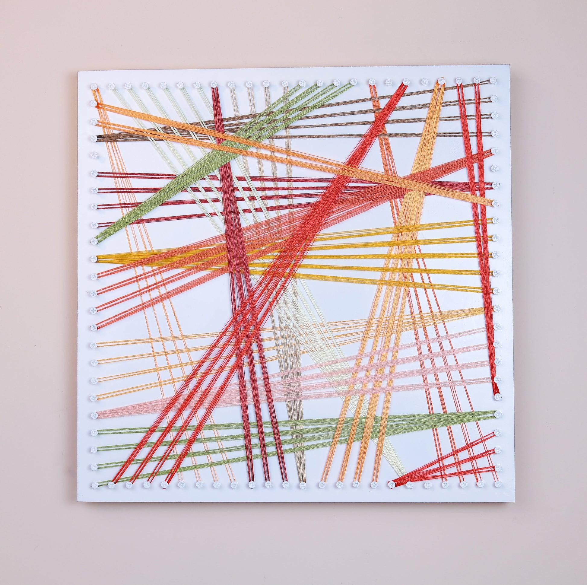
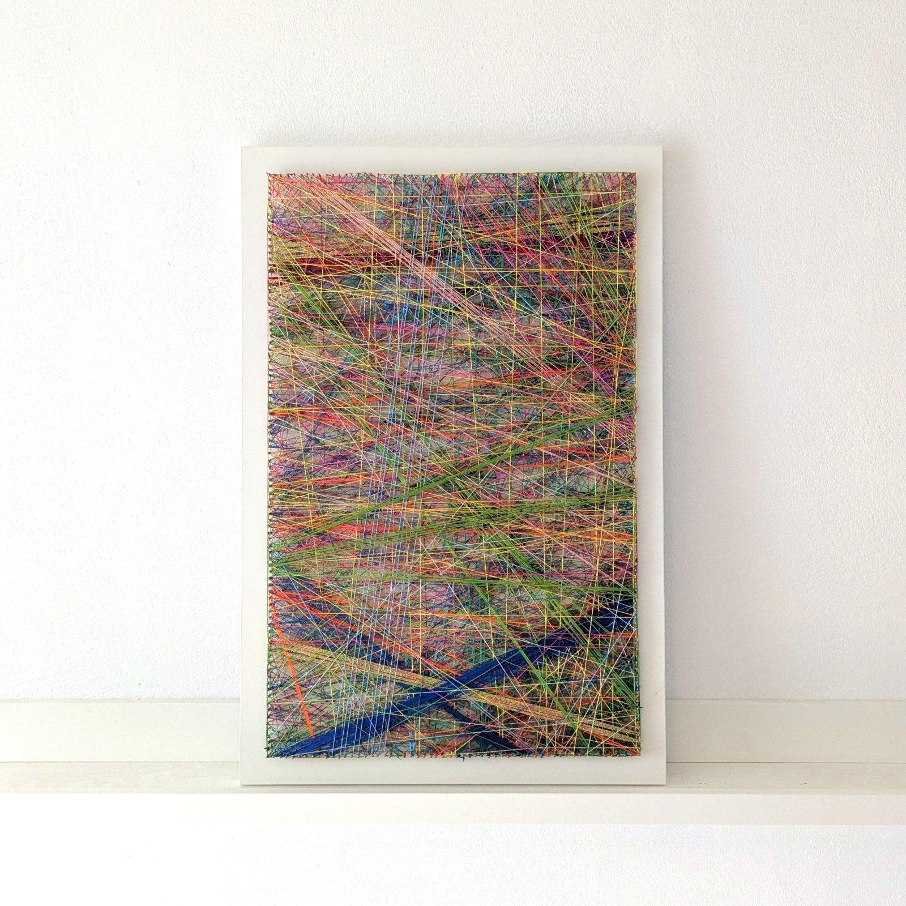
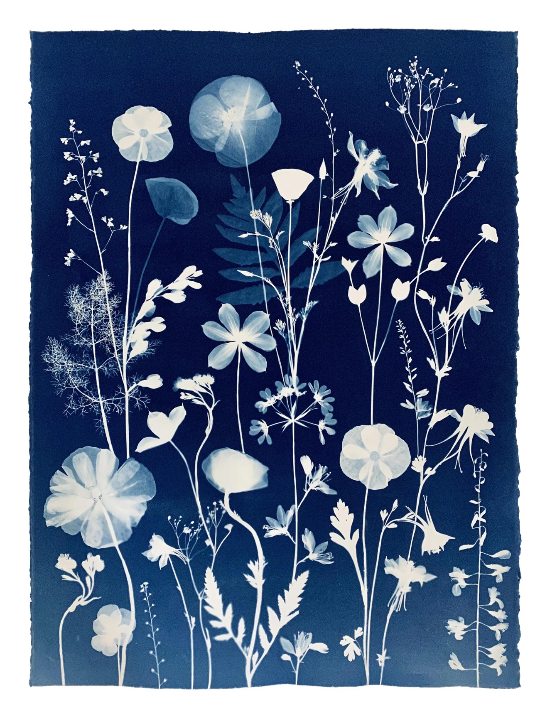
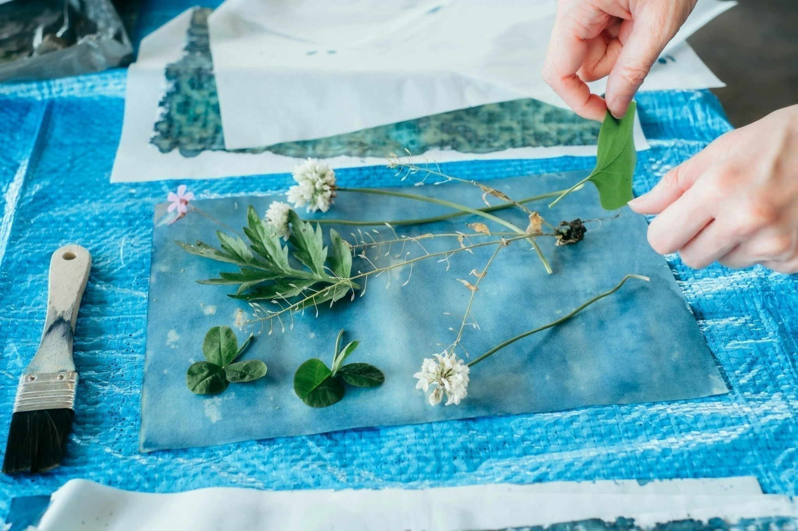
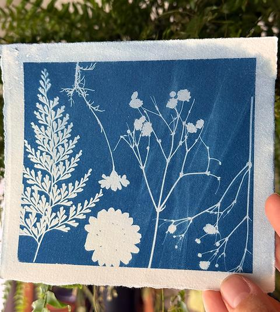

О встрече с настоящим ребёнком, о собственных чувствах и о жизни, которая происходит сейчас.
Мой ребёнок развивается иначе
Иногда родительство начинается с образа будущего, который мы успели нарисовать в своём воображении. А потом жизнь предлагает нам познакомиться с ребёнком, который не обязан соответствовать этому образу.
Возможно, вы уже услышали множество новых слов: обследования, особенности развития, занятия, рекомендации. Возможно, каждый день приходится принимать решения, искать специалистов, объяснять окружающим то, что трудно объяснить даже себе.
В этой жизни может быть много любви. И много усталости. Радость от маленького открытия может соседствовать с тревогой о будущем. Можно гордиться ребёнком и одновременно скучать по той лёгкости, которую вы когда-то представляли. Эти переживания не отменяют друг друга.
Постепенно вокруг ребёнка иногда возникает целая система задач. Что ещё попробовать? Чему научить? Как помочь? За всем этим легко перестать замечать не только себя, но и самого ребёнка — его интересы, юмор, привычки, любимые звуки, особенный способ быть рядом.
Ваш ребёнок — гораздо больше, чем особенности его развития. И ваша общая жизнь — гораздо больше, чем задачи, которые приходится решать.
Эти практики не предлагают правильного способа чувствовать или воспитывать. Они приглашают немного изменить угол зрения: увидеть ребёнка, дать место собственным чувствам и заметить то, что проявляется в настоящем.
Материалы и практики
Выберите то, что откликается сегодня. Все работы могут быть несовершенными, незавершёнными и очень личными. Не нужно показывать их кому-либо.

1. Ребёнок, которого я вижу
25–40 минут · Тактильный коллаж · ткани, бумага, клей
Когда вокруг ребёнка так много определений и рекомендаций, бывает важно снова спросить себя: каким я знаю его вне всех этих слов? Что в нём меня удивляет? Что радует? Что принадлежит только ему?
Открыть практику
Что понадобится
Плотный лист бумаги или картон, небольшие кусочки ткани, ленты, нитки, бумажные обрезки, клей. Используйте то, что уже есть дома. Можно обойтись одной бумагой, если тканей нет.
Как выполнять
На несколько минут отложите мысли о том, что ребёнку ещё предстоит освоить. Вспомните его таким, каким вы видите его в обычной жизни.
Выберите материалы, которые напоминают о нём: мягкие или шершавые, яркие или спокойные, лёгкие или плотные.
Создайте портрет. Он может быть похож на лицо, а может быть совсем абстрактным. Здесь важнее ощущение человека, чем внешнее сходство.
Добавьте детали, связанные с его интересами, характером, любимыми занятиями и вашими общими моментами.
Посмотрите на работу. Есть ли в ней что-то, чего вы не замечали в повседневной суете?

Вопросы для размышления
Какие особенности ребёнка я люблю и узнаю без слов?
Что в нём не описать никаким заключением?
Когда я в последний раз просто интересовался или интересовалась им — без цели чему-то научить?
Что мне хочется сохранить в наших отношениях?
Маленькое открытие
Ребёнка можно видеть не только через то, что ему трудно, но и через всё, что делает его собой.

2. Нити моих чувств
20–30 минут · Нитяная композиция · картон и нитки, без станка
Можно любить ребёнка и уставать. Радоваться и тревожиться. Принимать настоящее и задаваться вопросами о будущем. Чувствам не обязательно выстраиваться в правильный порядок.
Открыть практику
Что понадобится
Небольшой прямоугольник плотного картона, нитки или остатки пряжи разных цветов, ножницы. Для закрепления подойдёт бумажный скотч. Специальный станок, гвозди и другие приспособления не нужны.
Как выполнять
Назовите несколько чувств, которые живут в вас сегодня. Каждому подберите цвет. Можно выбрать цвета интуитивно.
Закрепите кончик первой нити с обратной стороны картона и обмотайте его несколько раз в любом направлении.
Добавляйте другие цвета. Пусть нити пересекаются, расходятся, накладываются друг на друга. Не стремитесь к симметрии.
Если хочется, попробуйте создать из нитей условный пейзаж — линию горизонта, холм, воду, небо. Но абстрактное переплетение тоже подходит.
Выберите ещё одну нить — цвет поддержки, которой вам сейчас не хватает. Найдите ей место, не закрывая остальные.

Пример свободного переплетения. Дома можно использовать обычный картон вместо основы с креплениями.

Вопросы для размышления
Какое чувство заняло больше всего пространства?
Какому чувству я обычно не разрешаю быть?
Что изменилось, когда я добавил или добавила нить поддержки?
Что может стать такой поддержкой в реальной жизни?
Маленькое открытие
Разные чувства могут переплетаться, и мне не нужно отказываться от одного, чтобы иметь право на другое.

3. То, что проявляется
30–45 минут · Цианотипия · готовая светочувствительная бумага и растения
Мы часто представляем, каким будет будущее ребёнка. Но жизнь не всегда проявляется по задуманному рисунку. В этой практике можно исследовать разницу между ожиданием и тем, что возникает в действительности, — и увидеть ценность неожиданного.
Открыть практику
Что понадобится
Готовая бумага для цианотипии (sunprint paper), несколько листьев или цветов, прозрачная пластина или плёнка при необходимости, вода для проявления — согласно инструкции производителя. Используйте готовый набор; самостоятельно смешивать химические составы не нужно.
Как выполнять
Выберите растения и внимательно рассмотрите их: линии, форму, прозрачность, детали.
Разложите композицию на обычном листе. Представьте, каким будет её отпечаток. Что вы ожидаете увидеть?
Перенесите композицию на готовую светочувствительную бумагу и выполните экспонирование и проявление строго по инструкции к набору.
Посмотрите на результат. Какие детали появились неожиданно? Что оказалось иначе, чем вы предполагали?
Попробуйте некоторое время не исправлять и не оценивать изображение. Просто исследуйте то, что проявилось.


Если готовой бумаги нет, можно сделать композицию из листьев на белой бумаге, обвести её тени карандашом и сравнить ожидаемый рисунок с получившимся. Это другая техника, но она помогает исследовать ту же тему.
Вопросы для размышления
Что я почувствовал или почувствовала, когда результат оказался неожиданным?
Возникло ли желание немедленно всё исправить?
Что красивого или интересного я заметил или заметила только после проявления?
Какие качества ребёнка открылись мне со временем?
Что происходит в нашей жизни уже сейчас, пока я думаю о будущем?
Маленькое открытие
Не всё проявляется так, как мы представляли. Но неожиданное тоже может быть ценным.
Мои маленькие открытия
Если хочется, запишите то, что заметили после практики. Можно скопировать запись в свои заметки.
Индивидуальная поддержка
Если хочется поговорить о тревоге, усталости, принятии, отношениях с ребёнком или о собственных потребностях, можно выбрать специалиста и обсудить это в своём темпе.